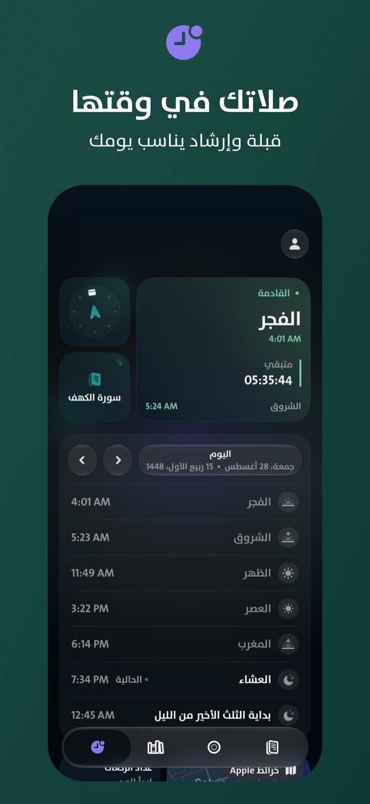
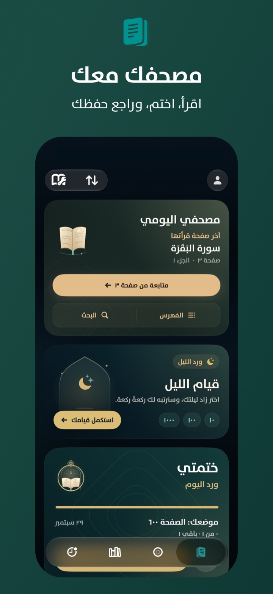
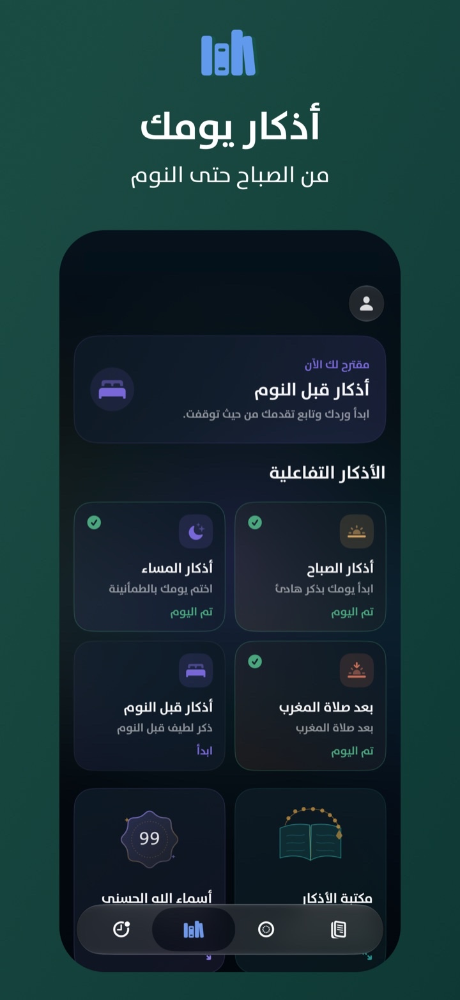
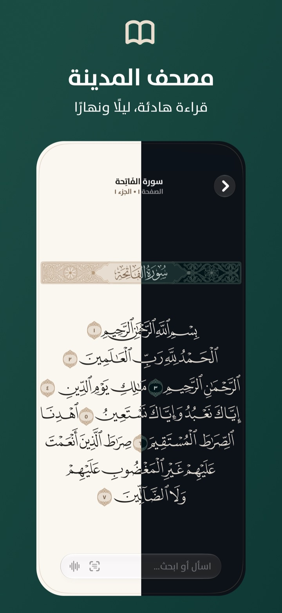
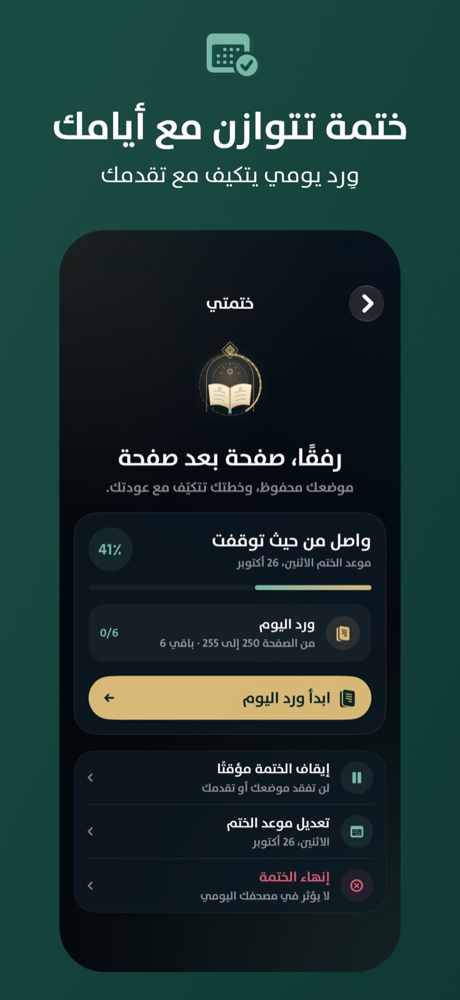
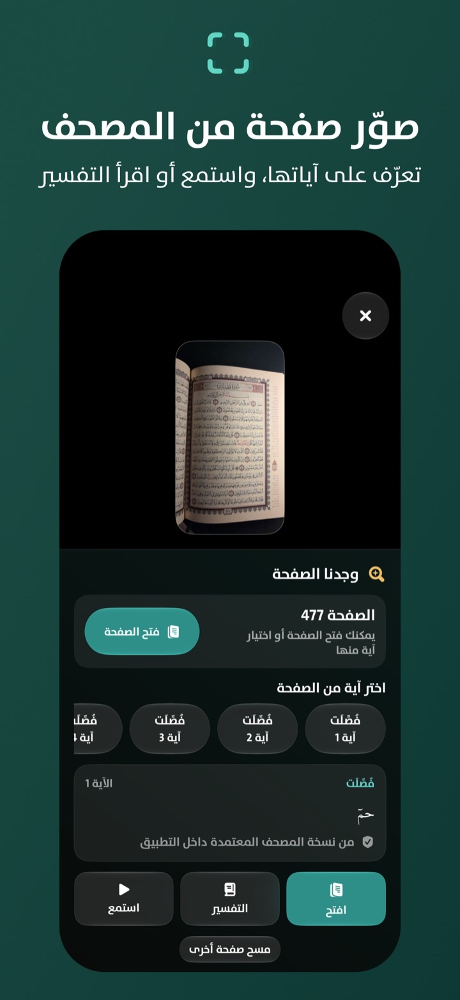
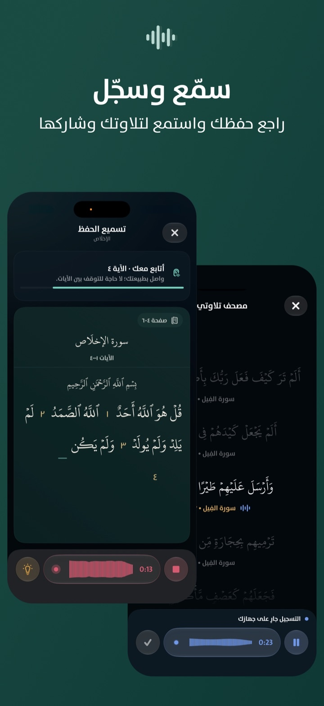

الفجر
ابدأ يومك من الصلاة.
اعرف الصلاة القادمة، تابع الوقت المتبقي، واستدل على القبلة. وعند الحاجة، اعثر على المساجد القريبة ووقت الوصول مشيًا.

وِرد
من الفجر إلى ما قبل النوم.
مصحف المدينة، أذكار يومك، مواقيت الصلاة والقبلة، وختمة تتكيّف مع تقدّمك—في تطبيق واحد.

يومك مع وِرد
كل جزء في وِرد له وقت واضح وفائدة مباشرة. من الفجر إلى أذكار النوم، يعود بك إلى ما تحتاجه من دون تشتيت.
الفجر
اعرف الصلاة القادمة، تابع الوقت المتبقي، واستدل على القبلة. وعند الحاجة، اعثر على المساجد القريبة ووقت الوصول مشيًا.

بعد الصلاة
افتح أذكار ما بعد الصلاة أو أذكار الصباح. يحفظ وِرد تقدّمك لتكمل من حيث توقفت.

الصباح
اقرأ من مصحف المدينة أو العرض النصي، وافتح أي آية للتفسير والترجمة والاستماع والمشاركة.

وِرد اليوم
حدّد موعد الإتمام؛ ويضبط وِرد نصيبك اليومي بحسب تقدّمك الفعلي.

خلال اليوم — صدى
اكتب: «كم مرة ذُكر موسى؟» فتظهر النتيجة محسوبة محليًا من نص المصحف المعتمد.
لحظة ذكر
اختر فئة الذكر والمس أي موضع للعدّ. ثم بدّل إلى العدّ الصوتي لتواصل من دون لمس الشاشة في كل مرة.
المساء
يتعرّف وِرد على آيات صفحة المصحف لتفتحها، تستمع إليها، أو تقرأ تفسيرها.

مراجعة التلاوة
سجّل تلاوتك من داخل المصحف، ثم استمع إليها وشاركها حين تريد.

مزايا أخرى
مراجعة الحفظ
قيام الليل
مكتبة الأذكار
من صفحة المصحف
من شاشة الجهاز
خصوصيتك أولًا
قبل النوم
راجع تقدّم ختمتك، وأكمل أذكار المساء والنوم. غدًا، تعود إلى القراءة من الموضع نفسه.
حمّل منApp Storeعلى iPhone وiPad، بالعربية والإنجليزية والإندونيسية.